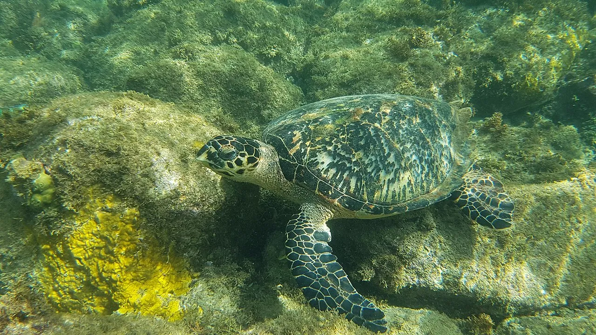

Réserve Cousteau
Guadeloupe, France · plongée, snorkeling

Îlets Pigeon, au large de Bouillante : une réserve popularisée par le commandant Cousteau. Tortues, coraux et buste sous-marin.
- Lieu
- Guadeloupe, France
- Niveau
- Débutant
- Activités
- plongée, snorkeling
- Type d'eau
- Mer / océan
- Coordonnées
- 16.17, -61.79 (position approximative du secteur)
Dangers à connaître
- Bateaux de plongée nombreux.
- Corail protégé.
Le conseil d'Ocean Buddy
Plonge avec un club agréé et respecte les bouées de mouillage.
Ouvrir dans Ocean Buddy Télécharger sur l'App Store
Source : Fiche Ocean Buddy · septembre 2026 · à vérifier localement.